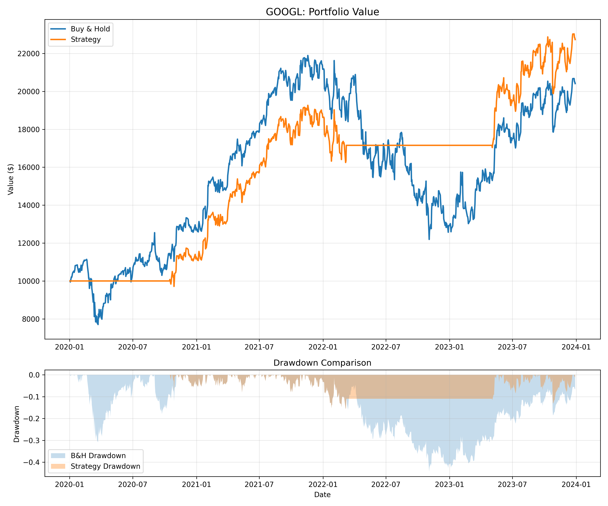

Project · Python Backtesting
Can a Simple Trading Rule Beat Buy-and-Hold?
I built a Python backtest to see whether a rule-based moving average strategy could manage risk better than simply buying and holding five major tech stocks from 2020 to 2024.
Python · pandas · matplotlib · yfinance · GBA 6070 Programming Foundation for Business Analytics, Spring 2026
Approach
Using daily adjusted prices from Yahoo Finance for AAPL, MSFT, AMZN, GOOGL and NVDA, I simulated investing $10,000 in each stock from January 2020 to January 2024 two ways:
- Buy-and-hold: buy on day one and never sell.
- Moving average crossover: hold the stock when its 50-day average price is above its 200-day average (a "golden cross"), and move to cash when it falls below (a "death cross").
Signals were shifted by one day to avoid look-ahead bias. I compared total return, annualized return, win rate and maximum drawdown (the largest drop from a peak).
Key results

| Stock | Buy-and-hold total return | Strategy total return |
|---|---|---|
| AAPL | +163% | +39% |
| MSFT | +143% | +89% |
| AMZN | +60% | +3% |
| GOOGL | +104% | +127% |
| NVDA | +729% | +296% |
2. But buy-and-hold usually earned more. Buy-and-hold had the higher total return on 4 of 5 stocks. Staying in cash during downturns also meant missing part of the recoveries.

Summary
The moving average crossover worked better for protecting capital than for maximizing returns. It cut the worst losses on every stock tested, but in a strong bull market for tech, buy-and-hold usually came out ahead. The strategy is best suited for investors who value a smoother ride and smaller losses over the highest possible growth.
The backtest assumes no trading costs or taxes and covers a single four-year period, so real-world results could differ.